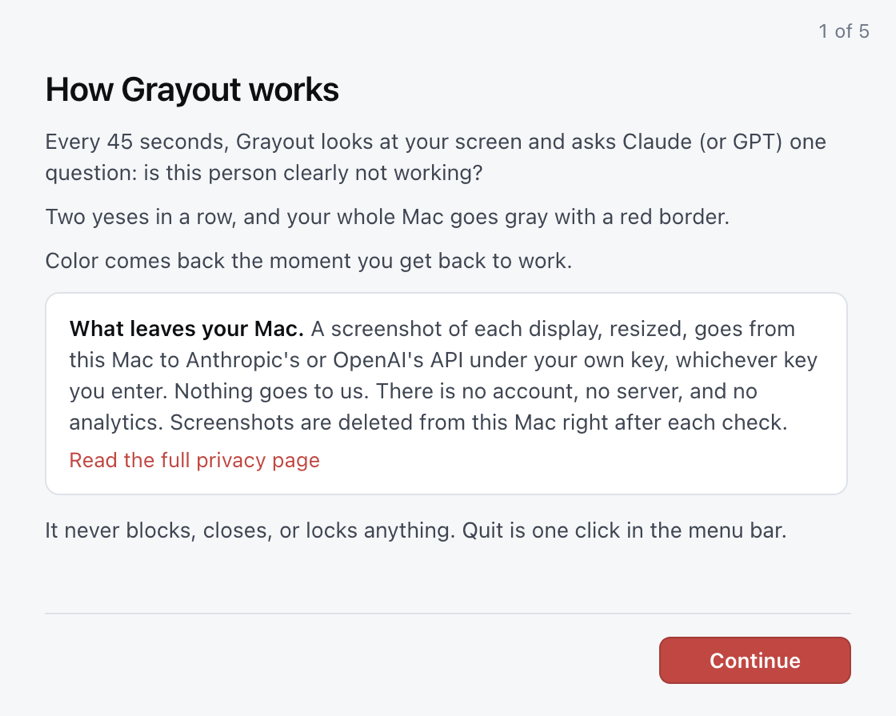

Choose your Mac
Not sure which you have? Apple menu > About This Mac. “Chip: Apple M…” means Apple Silicon. Both links always point at the latest release; see what changed.
What you get today
The current release is Grayout 1.0.1. It runs on your own OpenAI or Anthropic API key: you paste the key during setup and pay your provider directly, a fraction of a cent per check. The Grayout service, with 100 free checks and no key to get, opens with the next release, along with Grayout Pro. How to get a key.
What you get
Grayout starts with 100 free checks. No card, no account, no API key. When they run out, subscribe from the app or the pricing page.Subscriptions are not open yet. When they open, you can upgrade from the Grayout menu.
Homebrew
One command installs the same build, and brew upgrade keeps it current:
brew install --cask aarushkandukoori/tap/grayout
macOS still treats it as a downloaded app, so carry on from step 2 below.
First launch
Grayout is a one-person project and is not in Apple’s notarization program yet, so macOS warns you once. These steps get you past it.
-
Drag it to Applications
Open the DMG, drag Grayout onto the Applications folder, then eject the disk image. It has to live in Applications for Open Anyway and Start at login to work.
-
Open it the first time
On macOS 13 or 14: Control-click (or right-click) Grayout in Applications, choose Open, then click Open in the dialog. You only do this once.
On macOS 15 or later that shortcut no longer works. Double-click Grayout and macOS says it “could not verify Grayout is free of malware.” Click Done and go to step 3.
-
Allow it in System Settings
Open System Settings > Privacy & Security and scroll to Security. Next to “Grayout was blocked to protect your Mac,” click Open Anyway, confirm with your password or Touch ID, then click Open Anyway once more. macOS remembers this.
If the button is missing, double-click Grayout again and come back; it only shows for a while after a blocked launch. Or skip the dialog from Terminal:
xattr -dr com.apple.quarantine /Applications/Grayout.app
-
Turn on Screen Recording
The welcome window walks you through it. Click Open System Settings, switch Grayout on under Screen Recording, then click Relaunch Grayout. macOS only applies this permission after the app restarts.
That is the only permission it needs. No Accessibility, no Automation, no Full Disk Access. The camera is optional and off by default.
-
Set it up
Paste your OpenAI or Anthropic API key and click Test key. It is stored in your Mac’s Keychain and never leaves it except to call your provider. Then add a one-line description of your work and pick how often it checks. Getting a key takes two minutes.
Choose the 100 free checks, or subscribe if you already know you want Pro.Choose the 100 free checks. There is no key to paste and no account to make. Then add a one-line description of your work and pick how often it checks.
-
Preview the gray, then start
Click Preview the gray to see exactly what happens and to check that color comes back, then Start watching. Grayout lives in the menu bar; there is no Dock icon. The first check runs within seconds.

If your screen is stuck gray
Every way back to color, easiest first
- Click Restore color now in the Grayout menu. It works in every state, paused included.
- Click I’m working if it is there. Color returns and Grayout backs off for ten minutes.
- Quit or relaunch Grayout. Quitting restores color, and every launch turns grayscale off before anything else, even after a force quit.
- No Terminal needed: System Settings > Accessibility > Display > Color Filters, and switch it off. That is the switch Grayout uses.
- Do nothing. A watchdog restores color after 20 minutes no matter what.
From Terminal, with the quotes:
"/Applications/Grayout.app/Contents/ Resources/ helper/ grayscale" off
If you needed any of these, open an issue and say which one worked.
Updating
Grayout checks GitHub once a day and shows Update available in its menu when there is one; you can turn that off in Settings. Download the new DMG, drag Grayout over the old app, and relaunch. With Homebrew, run brew upgrade --cask grayout.
macOS sometimes asks for Screen Recording again after an update. If the switch is on but checks come back blank, choose Permissions > Captures look blank? in the menu, or paste this in Terminal:
tccutil reset ScreenCapture com.aarushkandukoori.grayout
Check your download
Every release is built by GitHub Actions from a tagged commit and carries a SHA256SUMS.txt. Compare it with your file:
shasum -a 256 ~/Downloads/Grayout-arm64.dmg
Use Grayout-x64.dmg for the Intel build. The two hashes must match exactly.
Build it from source
You need Node 22 and the Xcode Command Line Tools, which compile the small grayscale helper.
git clone https://github.com/aarushkandukoori/grayout cd grayout npm ci npm run helper npm start
npm run dist builds the DMGs. Running it on your own key covers the rest.
Uninstall
Cancel any subscription first (how). Then quit Grayout, drag it from Applications to the Trash, and delete ~/Library/Application Support/Grayout, which holds your settings and the 30-day log. Turn off its login item in System Settings > General > Login Items if it is still listed.